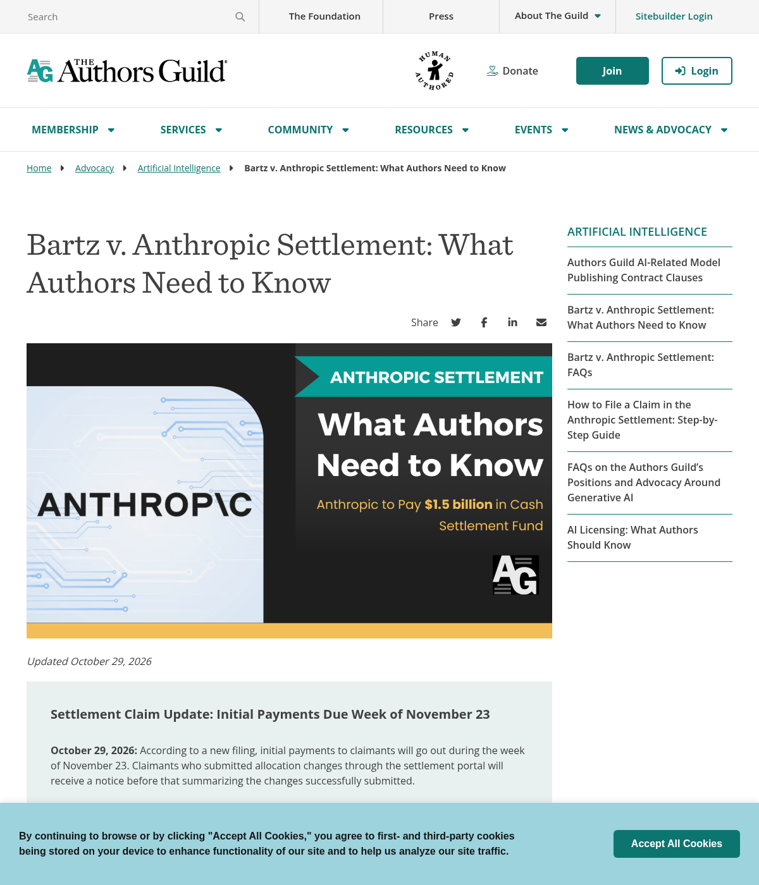
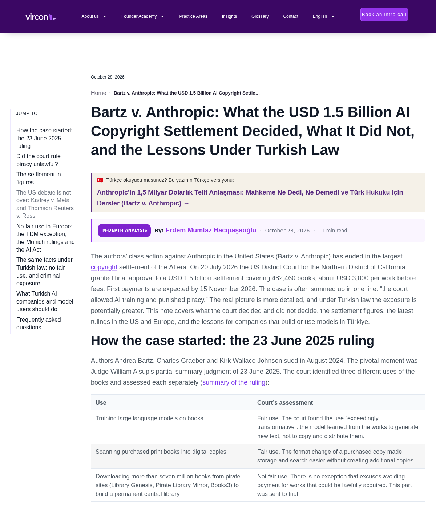
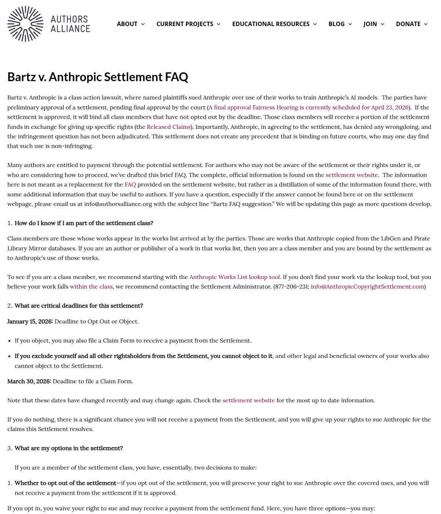
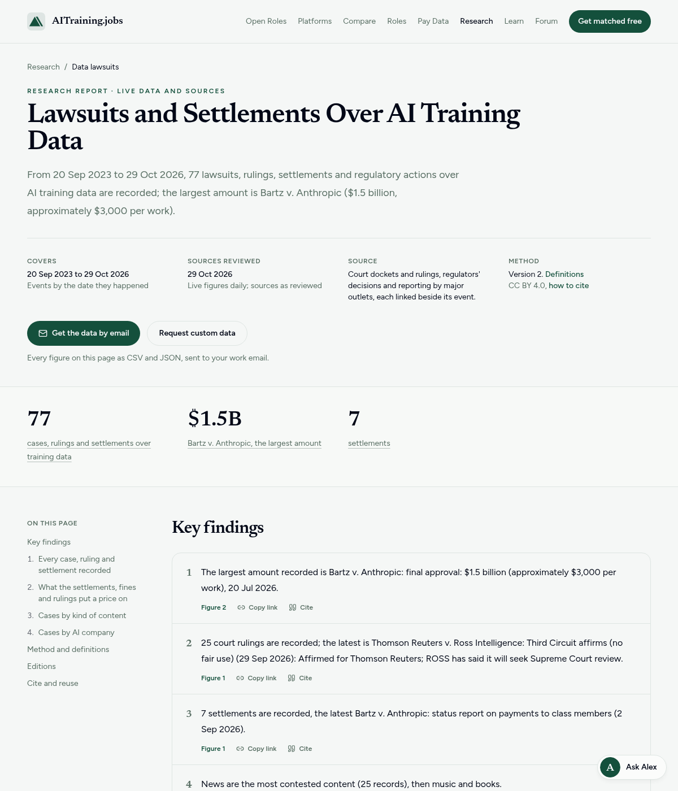

Why Anthropic Is Paying Book Authors $1.5 Billion This Month
In Bartz v. Anthropic, a federal court approved a $1.5 billion class settlement covering 482,460 books downloaded from shadow libraries, with initial author and publisher distributions scheduled in November 2026.
Authors Start Getting $1.5 Billion
This November, book authors start collecting from a 1.5 billion dollar AI copyright settlement with Anthropic.

Source: Authors Guild Settlement Update, Oct 29, 2026
Training Passed. Piracy Failed.
In June 2025, the judge drew a sharp line: training AI on bought books was fair use, but downloading millions of pirated copies was not.

Source: Bartz v. Anthropic, N.D. Cal. summary judgment (Jun 23, 2025)
482,460 Registered Books Covered
Before trial, Anthropic settled without admitting liability, covering 482,460 registered books from LibGen and PiLiMi at roughly 3,000 dollars gross per title.

Source: Authors Alliance FAQ & Final Approval Order (Jul 20, 2026)
Largest AI Copyright Deal So Far
Out of 77 AI training-data cases one tracker has logged, this 1.5 billion dollar settlement is still the largest payout.

Source: AITraining.jobs Litigation Tracker (through Oct 29, 2026)
How You Source Data Matters
For builders, pay for clean inputs. For creators, timely copyright registration was the ticket into this payout.
Source: Bartz v. Anthropic Class Definition, N.D. Cal.
- Authors Guild: Bartz v. Anthropic Settlement Update (Oct 29, 2026): https://authorsguild.org/advocacy/artificial-intelligence/what-authors-need-to-know-about-the-anthropic-settlement/
- Authors Alliance: Bartz v. Anthropic Settlement FAQ: https://www.authorsalliance.org/resources/generative-ai/bartz-v-anthropic-settlement-faq/
- Vircon Legal Breakdown of Jul 20, 2026 Final Approval (Oct 28, 2026): https://virconlegal.com/bartz-v-anthropic-1-5-billion-copyright-settlement-turkish-law/
- AITraining.jobs AI Data Lawsuits & Settlements Tracker (Oct 29, 2026): https://aitraining.jobs/research/ai-training-data-lawsuits
Free 5-Hour Asset Builder OS + reading list. Check current edition availability directly on Amazon or explore Audible audiobook options.
Check Availability on Amazon Listen Free on AudibleTopics: anthropic settlement, bartz v anthropic, ai copyright, authors guild, fair use, ai training data, tech law